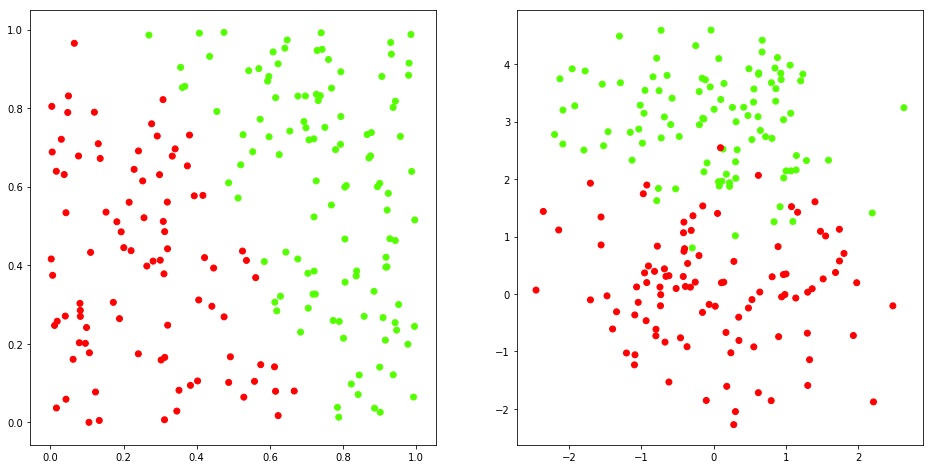
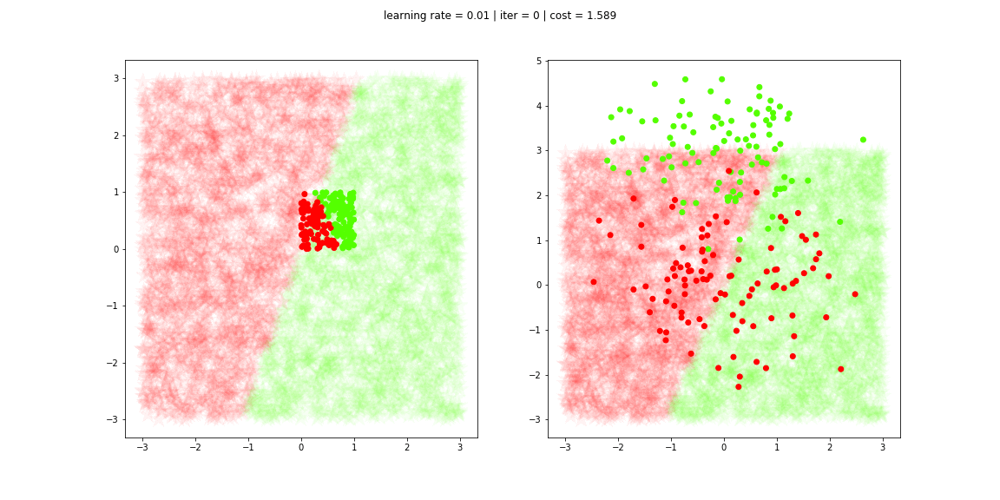

Overview and implementation of the most fundamental Neural Network model.
%matplotlib inline
import matplotlib
import matplotlib.pyplot as plt
import numpy as np
from NN__utils import *
# Synthetic data 1 and 2
x1, y1 = synthData1()
x2, y2 = synthData2()

The Perceptron algorithm is very similar to the Logistic Regression one.
The activation function (Sigmoid) is: $$ \large \hat{y}=A=\frac{1}{1 + e^{-Z}} $$ The cost function is: $$ \large J = -\frac{1}{m}\sum_{i=1}^{m}y^{(i)}\log(a^{(i)})+(1-y^{(i)})\log(1-a^{(i)}) $$
Gradients: $$ \large \frac{\partial J}{\partial w} = \frac{1}{m}X(A-Y)^T$$ $$ \large \frac{\partial J}{\partial b} = \frac{1}{m} \sum_{i=1}^m (a^{(i)}-y^{(i)})$$ where:
The optimization functions is: $$ \large \theta = \theta - \alpha d\theta $$ where $\alpha$ is the learning rage.
class Perceptron(object):
def __init__(self, dim=2, alpha=0.01, iters=16, seed=1):
super(Perceptron, self).__init__()
self._iters = iters
self._alpha = alpha
np.random.seed(seed)
self._w = np.random.randn(dim, 1)
self._b = np.random.random()
self._J = 0.0
@property
def J(self):
return self._J
def fit(self, X, y):
w, b = self._w, self._b
alpha = self._alpha
m = y.shape[1]
for i in range(self._iters):
Z = np.dot(w.T, X) + b
A = 1/(1 + np.exp(-Z))
dw = 1/m*np.dot(X, (A - y).T)
db = 1/m*np.sum(A - y, axis=1)
w = w - alpha*dw
b = b - alpha*db
self._w, self._b = w, b
self._J = -1/m*np.sum(y*np.log(A) + (1 - y)*np.log(1 - A), axis=1)
self._J = np.squeeze(self._J)
def pred(self, x, beta=0.5):
w, b = self._w, self._b
z = np.dot(w.T, x) + b
a = 1/(1 + np.exp(-z))
return a > beta
%%time
# Perceptron model
p = Perceptron(iters=20000)
# Training and Prediction
p.fit(x1, y1)
y1_hat = p.pred(X)
p.fit(x2, y2)
y2_hat = p.pred(X)
Wall time: 1.81 s
